Introduction
I woke up one day and decided that I wanted to code my own portfolio. Technically speaking, this wasn't my first time coding my own portfolio, I have done my own in the Cybersecurity Boot Camp that I took a while back. Let's get one thing straight, I say "technically speaking" because this was quite possibly the roughest portfolio anyone has ever created, let me show you basically what it looked like:
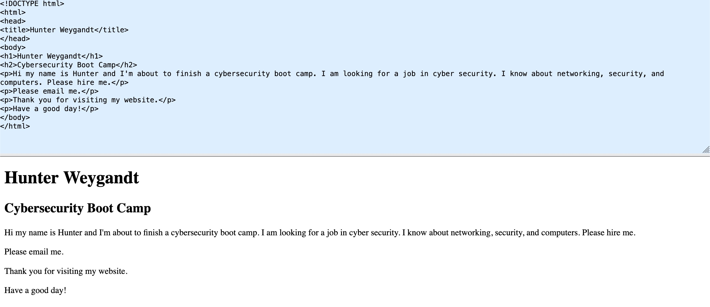
Slightly kidding, but almost entirely truthful. I had absolutely no idea what I was doing. This time, I wanted to do it right. Here is a walkthrough on how it came together from registering the domain, to moving DNS over to Cloudflare, to hosting the code publicly on GitHub, getting the security settings to my liking, and maybe even how I set up the email.
The Goal
I had a few goals walking into this, most of them fairly obvious:
- Learn HTML and how websites are coded.
- Learn the ins and outs of website infrastructure (mostly from a security perspective).
- Full control over the code and no template website building platforms.
- Build something I'm proud of and something that can show off my work.
- Finally, and possibly the most important, doesn't break the bank!
The Process
I started my venture by trying to figure out what name I wanted for my website. After careful consideration, I decided to be creative. Following what felt like months (probably five minutes) of trying to decide a domain, I landed on... my name. With that breakthrough behind me, I began looking over all of the domain registrars and reviewing my goals. I hopped over into NameCheap{.}com and bought the domain "hunterweygandt{.}com" for $11.28 a year. I decided against something like GoDaddy purely for the cost and possible future migrations.
For the DNS management, I could've stayed with NameCheap but something about Cloudflare's security was screaming for my attention. We will get into the security settings later, but for now I just replaced the NameCheap servers with the Cloudflare servers and verified that the change was sticking in the Cloudflare dashboard.
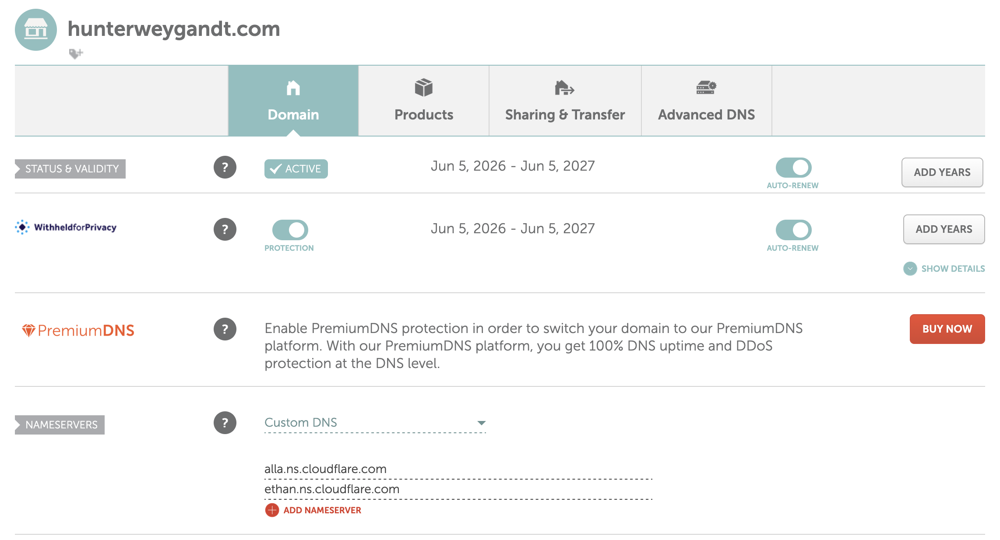
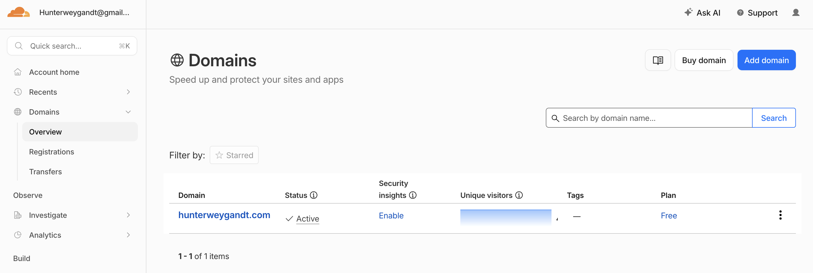
To go along with the cheap and do it yourself theme, I decided to publicly host my repository on GitHub. The reason for this? It's free. Not to mention, it's an absolutely amazing platform. In case you don't know what GitHub is, it's basically just a cloud platform that allows developers to store, manage, track, and share code repositories. Up until I built this website, I mainly only used it to pull tool repositories that other people coded.
I pulled up GitHub, created a new repository, named it my domain, gave an extremely detailed and perfected description (hunterweygandt{.}com website), made the repository public so then everyone can see my source code, added a README file because why not, and then pressed "create repository". I then created an index.html file, went into Settings -> Pages, then entered my custom domain which created the CNAME file and then added all of the DNS records to Cloudflare. One thing that held me up is that these records have to be set to "DNS only" (the grey cloud), not proxied. GitHub Pages handles its own SSL, and leaving Cloudflare's orange-cloud proxy on those records blocked the certificate from being issued. I also found a leftover proxied record that NameCheap had imported, which was quietly overriding my GitHub records until I deleted it. Once that was all taken care of, I was back to smooth sailing.
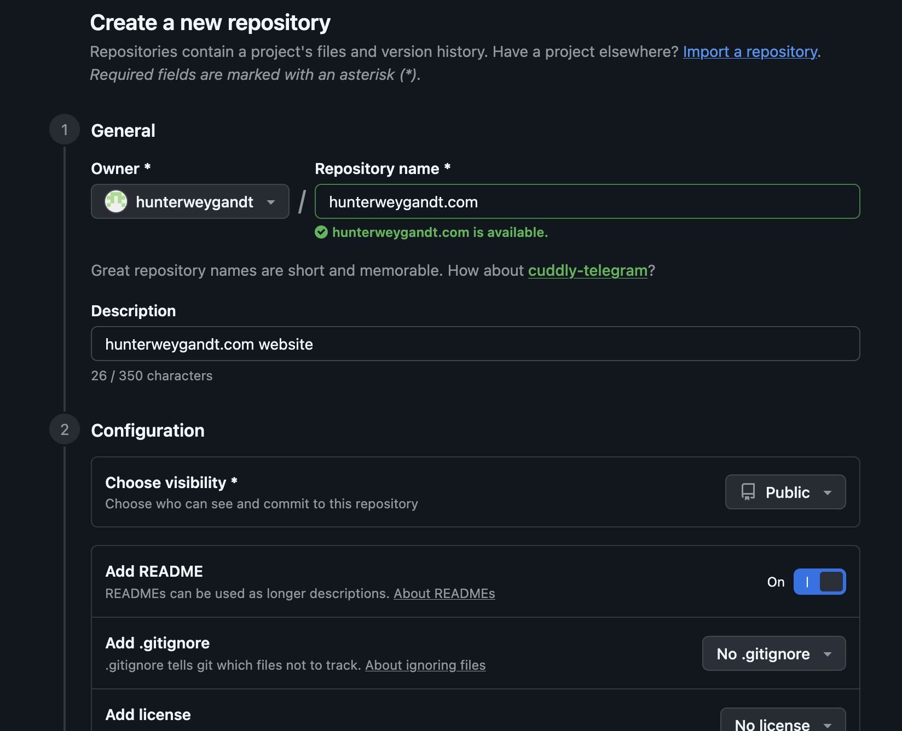
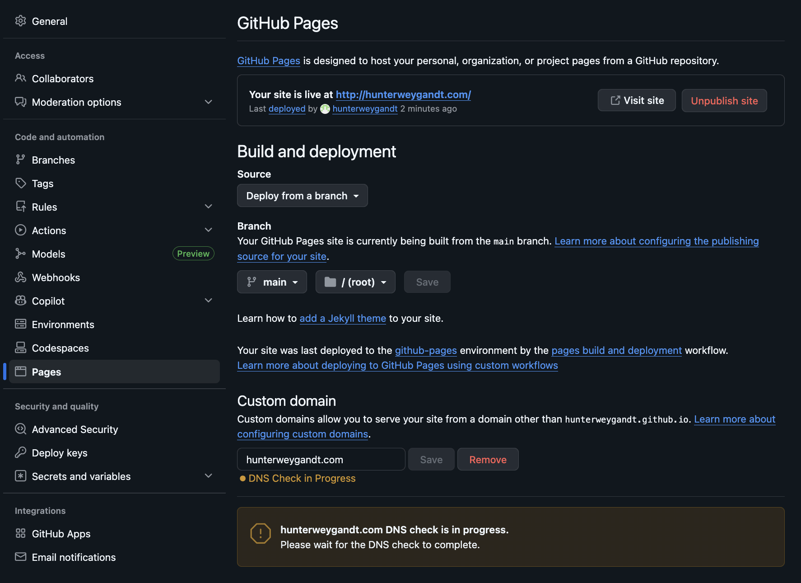
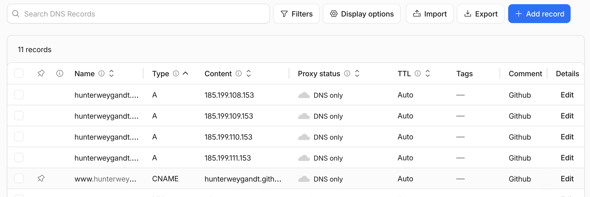
Now it was time to create the website. I started by using a Git command along with my special repository URL to clone my repository onto my local machine.
git clone https://github.com/hunterweygandt/hunterweygandt.com.git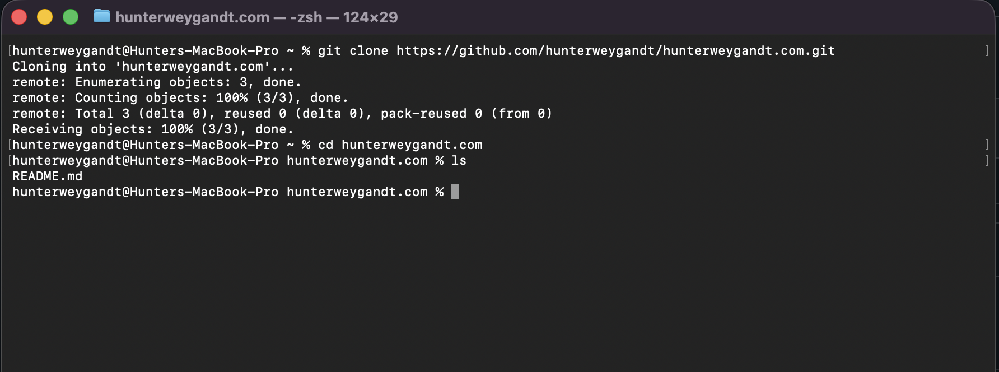
I opened up VS Code for the first time, found and opened the repository, and began creating the basics, all while trying to figure out what even is supposed to be in a portfolio.
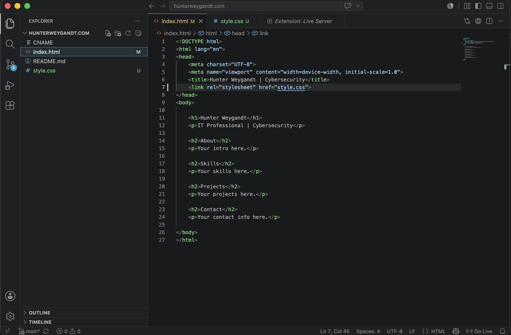
After a few long hours of learning the HTML and CSS layout, searching up other portfolios for inspiration, getting lost in MDN Web Docs and CSS Tricks, and asking Claude a couple of questions, I finally had a decent looking website that I was fairly happy with. I ran three Git commands out of VS Code to publish my repository and then I viewed my website.
git add .
git commit -m "web v1.0"
git pushFinally, the time that I was waiting so impatiently for, the GitHub and Clouflare security settings! Starting off in GitHub, I went back into Settings -> Pages and it was as easy as checking a box saying "Enforce HTTPS". This was easy because I already added the DNS records earlier. GitHub issued my TLS certificate and just like that, all traffic to and from my website is now encrypted.
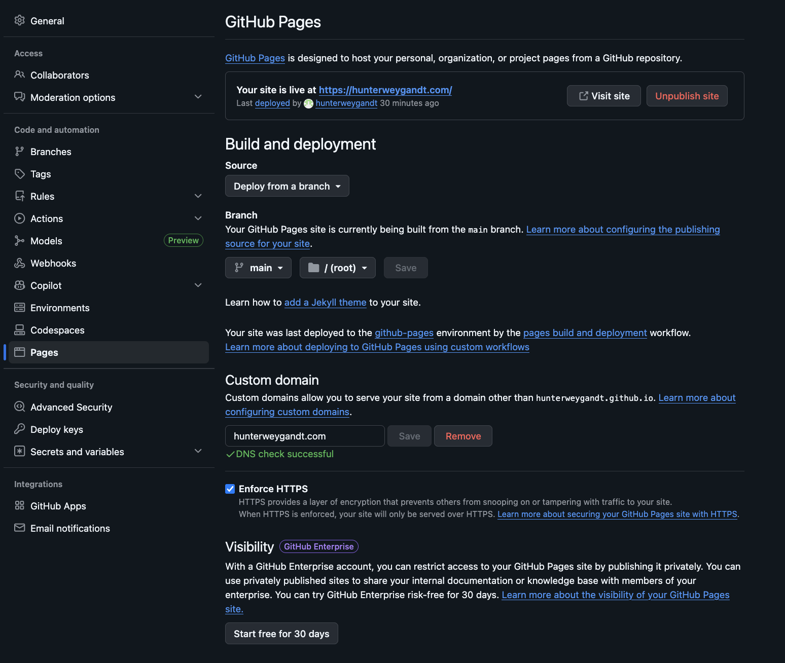
Over in Cloudflare, I enabled a few settings to improve security:
- SSL/TLS
- Set encryption mode to Full (strict) — encrypts traffic end to end and validates the certificate
- Always Use HTTPS — redirects any http:// traffic to https://
- Automatic HTTPS Rewrites — fixes insecure links within the page
- HSTS — forces browsers to use HTTPS. I enabled it but left includeSubDomains and preload off because of the lockout risk
- Minimum TLS Version set to TLS 1.2 — blocks insecure connections
- Security
- Block AI bots — left off, to allow AI crawlers and search indexing
- Bot Fight Mode — on, to block and challenge known malicious bots
- Browser Integrity Check — on, also to block known malicious bots
- Optimization
- HTTP/3
- 0-RTT Connection Resumption
- Scrape Shield
- Email Address Obfuscation — prevents my email from being harvested by bots and spammers
- Hotlink Protection — stops other sites from directly embedding my images
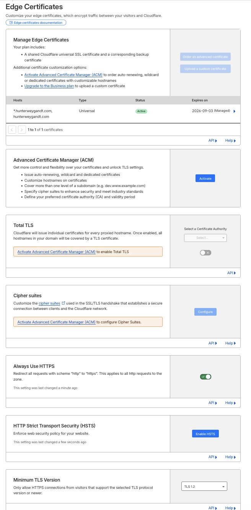
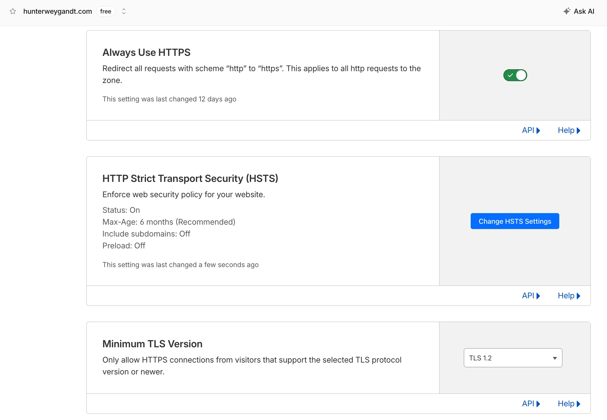
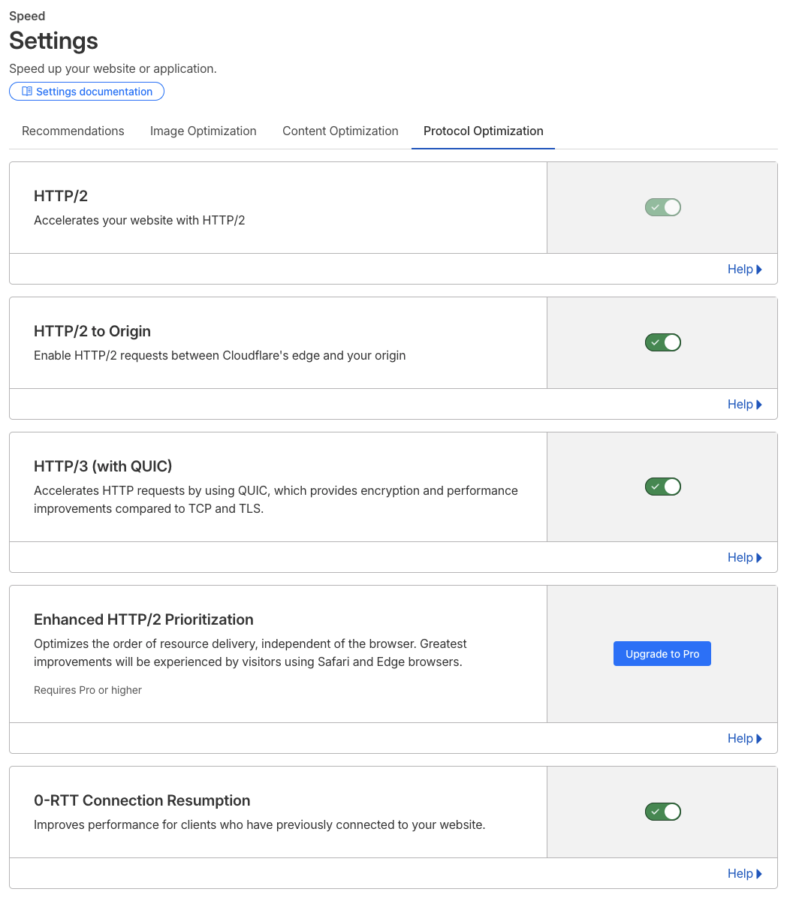
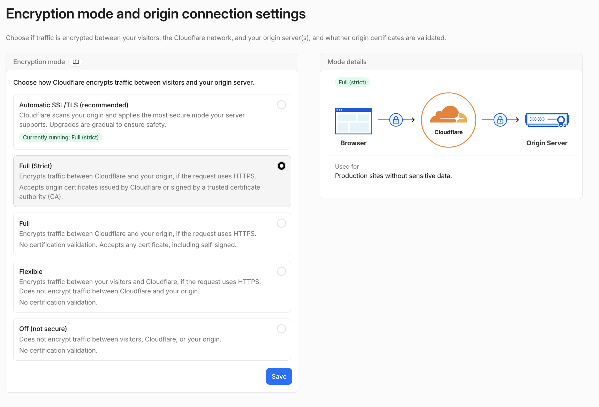
I thought I was done, but then I realized how will anyone contact me? So I set up an email. Since hunter{@}hunterweygandt{.}com seemed quite long, I decided it was best if I bought another domain. I went back to NameCheap and bought hweygandt{.}com. After learning that most people use Zoho Mail for their small business emails because of the free custom domain email plan, imagine the slap to my face when I found out it's not free anymore (at least for me it wasn't). I was still dedicated so I started searching around and found that Cloudflare could forward the emails to me, but I figured that wouldn't work since I still needed to reply to these emails. I kept searching and found Google Workspace, but that was about $7 a month for the annual plan. I also found Microsoft 365 Business Basic for around $6 a month. The issue was that I made this entire website for right around $11-$12 a year, this was basically as free as you can get it. I didn't want to fold into one of these money costing plans because then I wouldn't be able to check off that goal, so I kind of cheated a tiny bit. I have been paying for the full Proton suite for a few years now and have mainly only been using the VPN, but I found out that my Proton plan also supports three custom domains and 15 accounts per domain. I jumped over to Proton Mail, connected my domain, added in all the DNS records, removed the old ones, and tested it. My new email, hunter{@}hweygandt{.}com, could now send and receive mail and had DMARC, DKIM, and SPF configured all to improve email security, reduce spoofing risks, and increase email deliverability. Also while I was changing the DNS records, I decided to have hweygandt{.}com redirect to hunterweygandt{.}com to avoid any confusion.
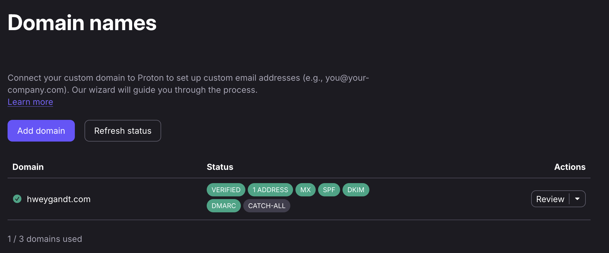
Final Thoughts
All that work just for me to try to show a colleague my website and for it to be blocked by my company's web filtering because it was a recently registered domain, LOL.
Anyways, I had a ton of fun with this project, more than I thought I would. From confused to stressed to angry to happy to confused again, it was a roller coaster of emotions. By design, I'm not the most creative person in the world, so to see the website come to life even prettier than I imagined was amazing. I was able to improve my skills in coding, website design, website hardening, website infrastructure, Git, email security, search indexing, and just flat out website troubleshooting.
I guess one question still lingers, how in the world am I going to do the documentation section? I guess if you're seeing this then I must have already done it, so wish me luck!
← Back to Documentation